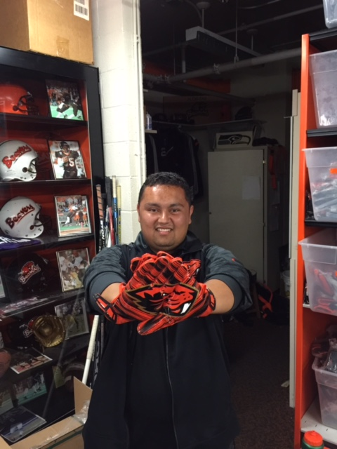

- Name and Nickname: Lorenzo Ayala, Bubba
- Major and year of study: Computer Science, Sophmore
- Confidence Scale: My confidence is around a three with my web development skills as I have a very basic understanding of HTML and JavaScript, so I still have a lot to learn.
- Learning Target: From this course I hope to learn all the basic necessities of web design as well as dive into more advanced subjects dealing with numerous markup languages.
- Piazza sign-up: I have signed up for piazza and I'am registered for the class.
- Interesting Fact/Experience: An interesting fact about myself is that I'am half El Salvadorian which has played a huge in how I grew up and was raised during my life and has given me a great perspective on life.